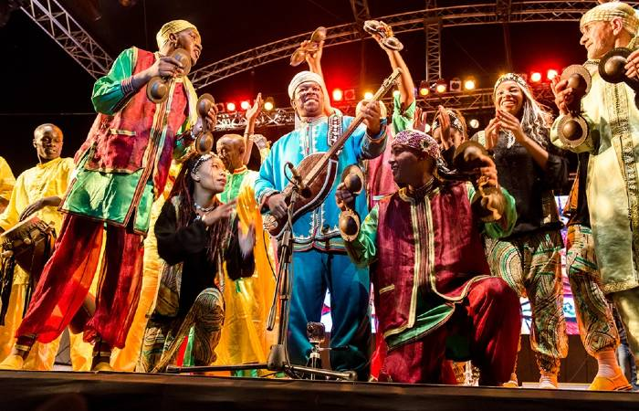
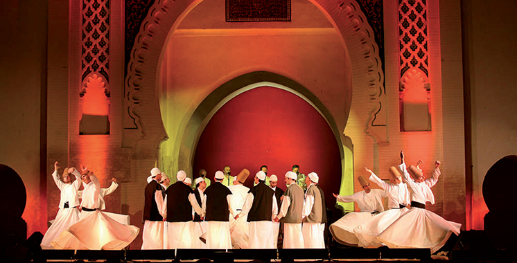
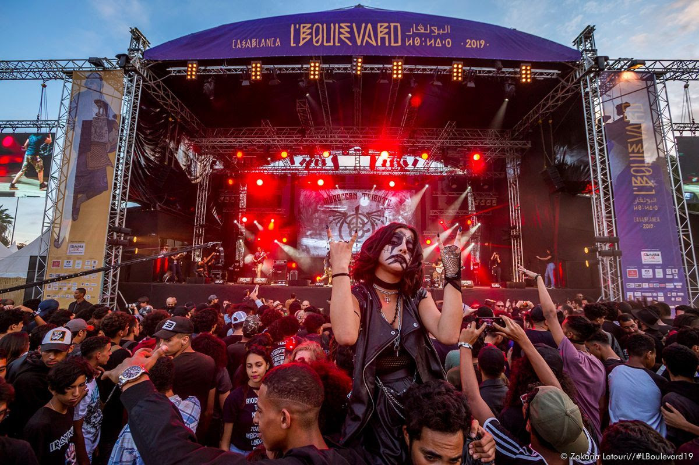
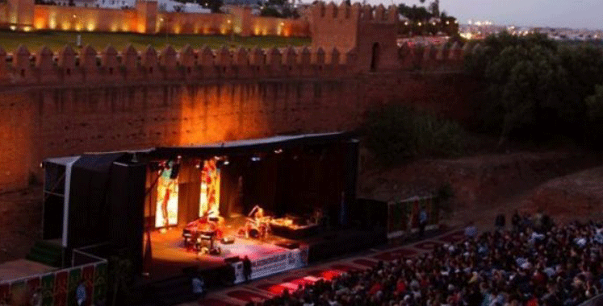
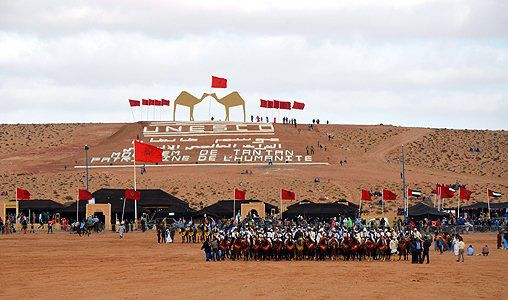
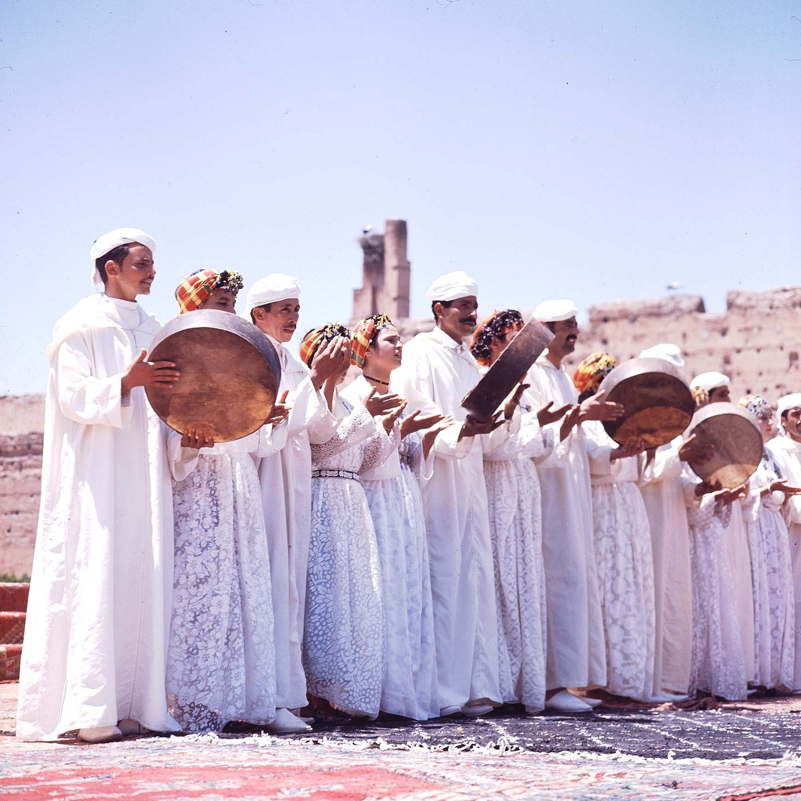
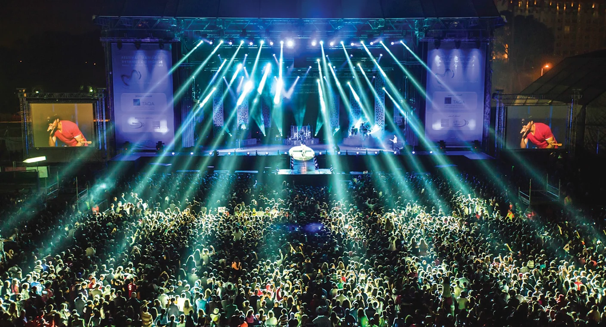

Le Festival International du Film de Marrakech est un rendez-vous annuel incontournable du cinéma, réunissant réalisateurs, acteurs et cinéphiles du monde entier. Il met en lumière les films marocains et internationaux, tout en offrant une plateforme aux jeunes talents.

Le Festival Gnaoua d’Essaouira est un événement musical emblématique qui célèbre la richesse des traditions gnaoua et la fusion avec les musiques du monde. Chaque année, il attire musiciens et spectateurs du monde entier pour des concerts, des ateliers et des rencontres culturelles uniques.

Le Festival Timitar d’Agadir met à l’honneur la musique amazighe et les cultures du monde. Chaque année, il réunit artistes locaux et internationaux pour des concerts, des rencontres culturelles et des échanges artistiques uniques.

Le Festival des Musiques Sacrées de Fès célèbre la diversité spirituelle et musicale du monde. Chaque année, il réunit artistes et publics autour de concerts et de performances qui mettent en avant la paix, le dialogue et l’harmonie entre les cultures.

Le Festival du Printemps des Alizés célèbre la musique, la culture et la créativité à Dakhla. Chaque année, il réunit artistes locaux et internationaux pour des concerts, spectacles et animations qui mettent en valeur la diversité artistique et le patrimoine culturel de la région.

Le Festival Tanjazz à Tanger est un rendez-vous incontournable du jazz au Maroc. Chaque année, il réunit musiciens locaux et internationaux pour des concerts, ateliers et rencontres, offrant une scène unique aux amateurs de jazz et aux passionnés de musique.

Le Festival Boulevard de Casablanca est un événement majeur dédié aux arts urbains et contemporains. Chaque année, il propose des spectacles de théâtre, danse, musique et street art, offrant une plateforme aux artistes émergents et confirmés tout en animant la ville.

Le Festival Al Aita de Safi célèbre la musique traditionnelle marocaine Aïta et son patrimoine culturel unique. Chaque année, il réunit musiciens et passionnés pour des concerts, ateliers et échanges autour de cet art ancestral

Le Festival Chellah Jazz de Rabat met à l’honneur le jazz dans un cadre historique unique. Chaque année, il réunit musiciens marocains et internationaux pour des concerts et performances qui célèbrent la créativité et la diversité musicale.

Le Moussem de Tan-Tan est un grand rassemblement culturel et traditionnel des populations nomades du sud marocain. Chaque année, il célèbre les coutumes, la musique, la danse et les arts du Sahara, tout en favorisant les échanges entre communautés locales et visiteurs du monde entier.

Ahaydous est une danse et musique traditionnelle amazighe du Maroc, pratiquée lors des célébrations et rassemblements communautaires. Elle se caractérise par des chants collectifs, des percussions et des mouvements synchronisés qui reflètent la cohésion et l’identité culturelle des tribus amazighes.

Le Festival Mawazine de Rabat est l’un des plus grands festivals de musique au monde. Chaque année, il réunit artistes internationaux et marocains, offrant des concerts gratuits et payants qui célèbrent la diversité musicale et culturelle du Maroc.